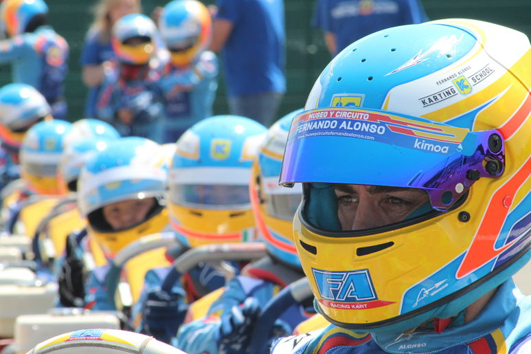

Fernando Alonso crea su propia marca de karting
Fernando Alonso no para. Su espíritu inquieto le induce a maquinar planes constantemente. Aparte de lo principal, que es su vuelta a la F1 de la mano de Renault para la temporada 2021, se ha propuesto tener un equipo de kart.

Volver atras
Onboard Alonso Karting